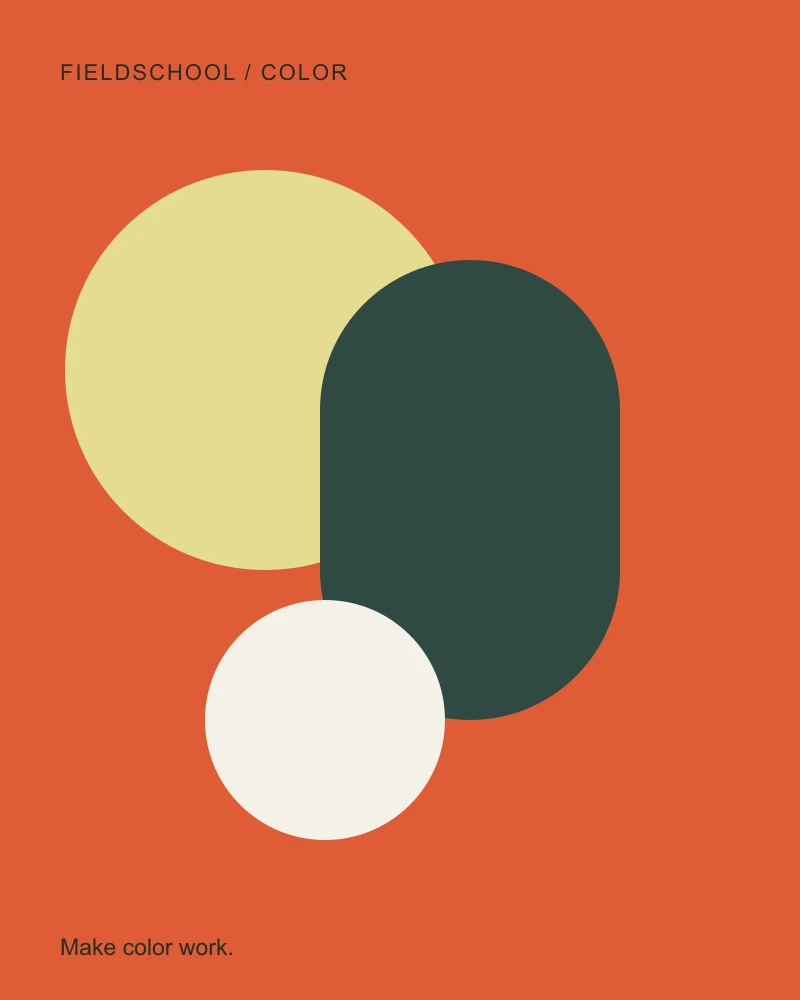

Two colors. One clear message.
A palette is a set of relationships. Learn to make those relationships useful.

The idea
A warm surface can feel welcoming without becoming pale and difficult to read. Begin with a clear distinction between ink and paper. A color has no fixed mood in isolation: its neighbor changes the relationship. Use the experiment below to compare a cream surface with an orange one. Keep the text constant so you can see what the color pair changes.
- Choose a background that gives the page its temperature.
- Choose an ink color that remains readable against it.
- Check the measured ratio, then describe the feeling.
Make a small experiment.
Create a warm palette that reaches at least 4.5:1 contrast for ordinary text. Then make a second pair that feels cooler. Save both observations in your notebook.
The everyday field guide
A little closer
to the ordinary.
There is always something worth noticing. The shadow beside a doorway. A folded corner. The space someone leaves between two words. Good work often begins with a small observation, and enough time to follow it.
The ratio uses the WCAG relative-luminance calculation. The 4.5:1 threshold concerns ordinary text contrast; it is not a complete accessibility assessment. Read the contrast guidance ↗
Keep the thinking.
Which choice changed the tone more: the background, or the ink? Where would the stronger pair be useful?